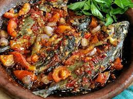

MAHNAFZ
Home
Profile
Hometown
Food
Tourist
Sambal Gami
sambal gami is sauce that cooked directly on a clay mortar and served with bawis fish or other side dishes

sambal gami bawis
sambal gami cumi
sambal gami bawis